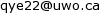

Brief Intro
Ye Quan-Zhi (last name first) or just Yeh, homo sapiens, male. Ph.D. candidate in astronomy at the University of Western Ontario. Currently working with Prof. Peter Brown on studying the demising comets and their meteoroid streams.
Contact Information
Office: PAB 255
E-mail: 
Physics Astronomy Building
1151 Richmond St.
London, ON N6A 3K7 Canada
Research Interests
Solar System Astronomy
Observing Technique and Instrumentation
Atmospheric Sciences
Archaeoastronomy
Education
Research Experiences
Honors and Service
- 2007: Recipient of the Gene Shoemaker Near-Earth Object Grant.
- 2007: National Award for Youth in Science, Technology and Innovation (China).
- 2007: First Prize in National Challenger Cup in Science and Technology (China).
- Referee: Icarus, MNRAS.
Publications
- Quan-Zhi Ye, Man-To Hui, and Rainer Kracht et al. (2014): Where are the Mini Kreutz-family Comets? ApJ, 796, 83 [ADS].
- Quan-Zhi Ye and Man-To Hui (2014): An Early Look of Comet C/2013 A1 (Siding Spring): Breathtaker or Nightmare? ApJ, 787, 115 [ADS].
- Quanzhi Ye, Paul A. Wiegert, and Peter G. Brown et al. (2014): The Unexpected 2012 Draconid Meteor Storm. MNRAS, 437, 3812 [ADS].
- Quanzhi Ye and Paul A. Wiegert (2014): Will Comet 209P/LINEAR Generate the Next Meteor Storm? MNRAS, 437, 3283 [ADS].
- Quanzhi Ye, Peter G. Brown, and Margaret Campbell-Brown et al. (2013): Radar Observations of the 2011 October Draconid Outburst. MNRAS, 436, 675 [ADS].
- Q.Z. Ye and S.S. Chen (2013): The ultimate meteorological question from observational astronomers: how good is the cloud cover forecast? MNRAS, 428, 3288 [ADS].
- Q.Z. Ye (2011): Forecasting Cloud Cover and Atmospheric Seeing for Astronomical Observing: Application and Evaluation of the Global Forecast System. PASP, 123, 113 [ADS].
- Q. Ye (2011): BVRI photometry of 53 unusual asteroids. AJ, 141, 32 [ADS].
Education and Public Outreach
- Student Supervision:
- Chen Sisi (SYSU/McGill): verification of numerical cloud cover forecast.
- Lin Yuan-Yuan (SYSU): occurrence of strong aurora events.
- Regular Writer for Guokr, a Chinese-based media outlet targets on science popularization.
- Regular Writer for the Amateur Astronomer magazine, the oldest astronomy magazine in China, founded in 1958.
- Guest Writer for the Planetary Society.
- Invited speaker for lectures and talks on many occasions, including at the Great Hall of the People (2007) and Peking University (2009).
- Chinese Edition Translator of: Unraveling the Mysteries of The Big Bang Theory by George Beahm, Wonders of the Universe by Brian Cox.
Last updated: 2015 March 30